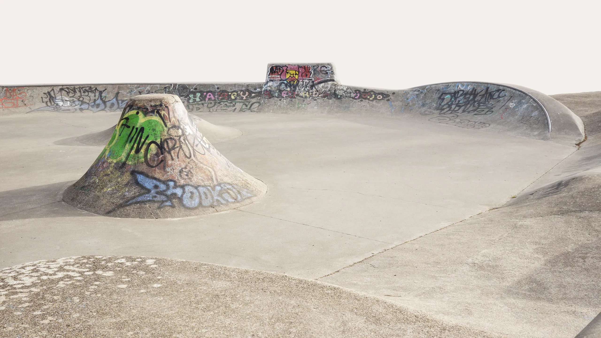
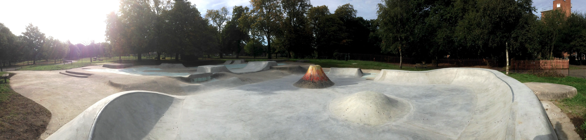
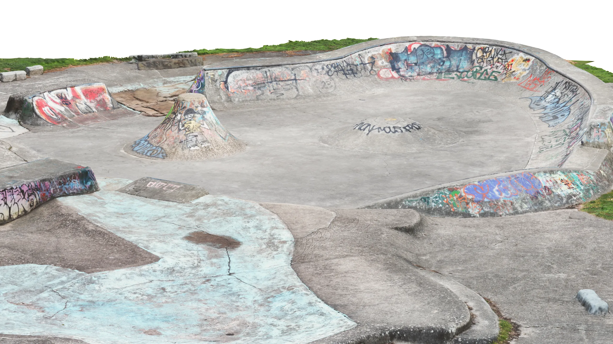
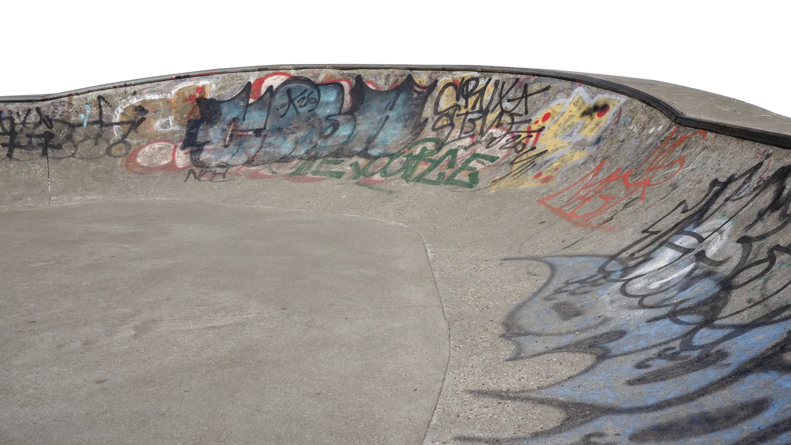
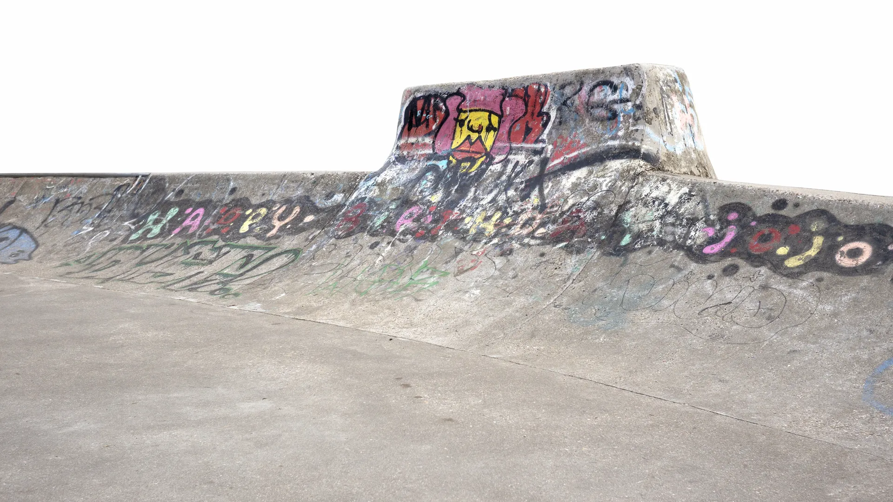
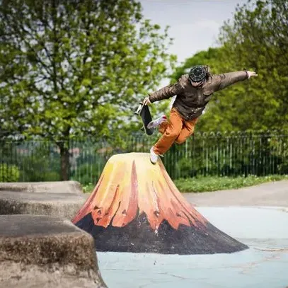

Bloblands — Bermondsey, SE1



Full photogrammetry scan of Bloblands. Orbit the space, check obstacles, measure run-ups. The model loads directly from the real concrete — nothing idealised.

A compact but well-considered layout. Manual pads, ledges and transitions sit close together — the kind of park where every inch gets used. Nothing wasted, nothing over-designed.

Tucked into Bermondsey, Bloblands draws a consistent local scene. No crowds, no tourists. The kind of spot you hear about from people who actually skate south London.

A neighbourhood concrete gem tucked away in Bermondsey. Raw, local, and well-loved. The kind of park that doesn't make much noise online but gets sessioned hard by the people who know about it.
Compact and street-focused, Bloblands is worth knowing as part of a wider south London circuit — especially if you're working your way from Southbank down toward Crystal Palace.